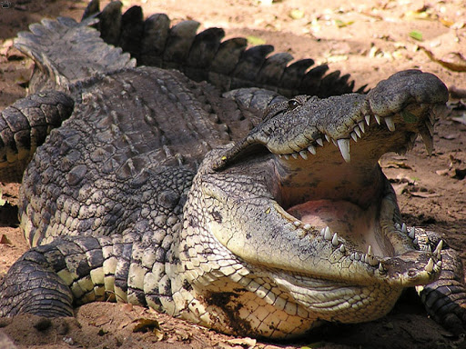
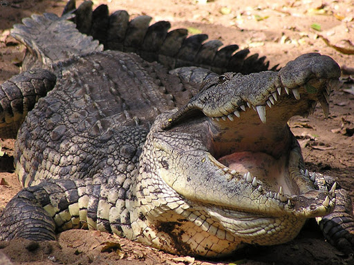

The Animal farm is a short documentary on the various types of animals that exist in the global ecosystem. Generally, these animals fall into two broad categories; Domestic animals and wild animals.
Domestic animals are those animals that can be trained at home as pet or for food. Examples include: Dogs, Cats, Rabbits, Sheeps etc. Wild animals on the other hand are occasionally hunted for food but never kept as pet as they are mostly dangerous predators. They dwell in highly isolated territories far from human habitation. Examples include: Lions, Elephants, Sharks, Hyenas etc.
You are provided with a search bar below. Enter an animal name and click submit to get details about that animal. Alternatively, you can hover over the list items above and click on an animal name in the drop down contents. Please note, only animals listed in the dropdown menu are presented.